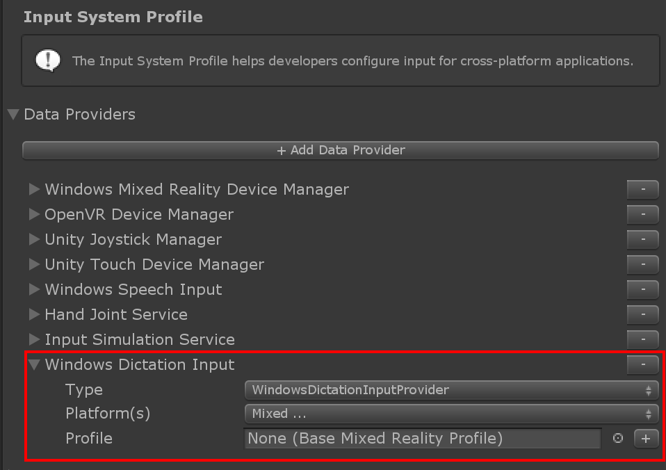

Dictation
Dictation允许用户录制音频剪辑并获得转录。要使用它，请确保在Input System Profile中注册了 dictation系统。Windows Dictation Input Provider 是现成提供的 dictation系统，但可以创建实现 IMixedRealityDictationSystem的 dictation系统。
要求
dictation系统使用Unity的DictationRecognizer 它本身使用基础Windows语音API来处理 dictation。注意这个表示此功能仅在基于Windows的平台上存在。
使用 dictation系统需要“ Internet客户端”和“麦克风”应用程序 PlayerSettings - Capabilities section 中的功能。 请参阅 Windows Mixed Reality Documentation 有关Unity中语音输入的更多详细信息。
配置
一旦设置了 dictation服务，就可以使用DictationHandler 脚本来启动和停止记录会话，并通过UnityEvents获得转录结果。
Dictation Hypothesis 当音频捕捉到用户用早期的、粗略的话语时，就会启动。
Dictation Result 在每句话的结尾(即用户停顿的时候)启动，得到目前为止捕获音频的最终转录。
Dictation Complete 是在录音环节的最后提出的完整的，最终的音频转录。
Dictation Error 用于通知dictation服务中的错误。本例中的转录包含了对错误的描述。
示例场景
MixedRealityToolkit中的Dictation场景 MixedRealityToolkit.Examples\Demos\Input\Scenes\Dictation 显示了正在使用的 DictationHandler 脚本。如果需要更多控制，则可以扩展此脚本或者创建自己的实现了IMixedRealityDictationHandler的脚本以直接接收dictation事件。